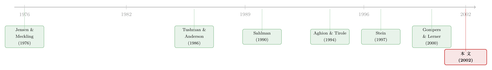

协同效应，是嫁妆还是软肋？——一个关于战略投资者的理论
本文读的是 Hellmann (2002, Journal of Financial Economics)：当一个投资者除了想赚钱，还想从你的成功里"沾光"（协同效应）时，这份额外的算盘对创业者究竟是福是祸？答案出人意料地非单调——若新创企业是战略投资者的互补品，创业者应当选它；若是温和的替代品，反而该投奔纯财务的独立风投；而当新创企业构成强替代威胁时，最优安排竟是让独立风投当主导、战略投资者退居"被动联合投资人"。一句话：协同效应这件嫁妆，在很多时候其实是块绊脚石。
1 英特尔的钱，为什么会有人不要？
先讲一个事实。1999 年，英特尔在 250 多家公司里砸下了超过 $1 billion，并且大方承认，它的"目标更多是战略上的，而非财务上的"。微软、UPS、路透社，乃至后来的中央情报局（CIA），都办起了自己的"圈内"（captive）风险投资基金。在 Yost and Devlin (1993) 的一份问卷里，93% 的公司创投受访者把"战略回报"列为首要目标。
听上去这是天大的好事：钱之外还附赠资源、渠道、技术协同。可偏偏 Block and MacMillan (1993) 在调研里记下了创业者的另一种声音——他们不信任公司投资者，担心"对方会为了满足母公司的目标而操纵企业，牺牲企业本身的利益"。
于是一个张力立刻浮现出来：协同效应（synergy）人人爱讲，但它到底惠及了谁？凭什么一个既能给钱、又能给资源的投资者，反而会被创业者拒之门外？这正是本文要回答的问题。它没有跑回归，而是搭了一个干净的模型，把"战略动机"翻译成努力函数里的一个符号，然后让它和"纯财务动机"在同一张谈判桌上竞争。
全文我们只追一个核心idea：战略投资者的"内部化协同"能力，在替代情形下会变成一种"无法承诺出力"的硬伤。 把这一点想透，三种融资结构、估值之谜、乃至非单调的创业者回报，都会自然落地。
2 先把"战略投资者"写成一行字
本文最漂亮的一步，是给"战略投资者"下了一个可以放进模型的定义：
战略投资者，就是手里握着一项资产、而这项资产的价值会被新创企业的成败所影响的投资者。
独立风投（independent venture capitalist, 记为 V）只关心新创企业本身能分到的利润；战略投资者（strategic investor, 记为 S）除此之外，还要关心新创企业对自己那项既有资产的冲击。这个冲击可正可负——成功既可能互补（complement）也可能蚕食（cannibalize）S 的老本行。
接着，一个自然的问题是：怎么把这种"冲击"量化？本文引入一个关键参数 \(\theta\)。设 S 的资产在失败时价值为 \(\underline{u}_S\)、成功时为 \(\bar{u}_S\)，则
$$\theta \equiv \bar{u}_S - \underline{u}_S$$
\(\theta\) 衡量"新创企业一旦成功，会让 S 的既有资产增值还是贬值"。\(\theta>0\)，S 拥有互补资产（比如软硬件之间的需求外部性，见 Katz and Shapiro, 1994，或成本互补）；\(\theta<0\)，新创企业部分替代、蚕食了 S 的老业务——这恰好对应了 Tushman and Anderson (1986) 里"能力增强型"与"能力摧毁型"创新的区分。大多数竞争模型都暗示 \(\theta<0\)：行业从 n 家变成 n+1 家，老玩家的日子总归更难过一点。而独立风投，无非就是 \(\theta=0\) 的那种特例。
一句话，本文把"要不要选战略投资者"这道现实难题，浓缩成了"\(\theta\) 是正是负、是大是小"。
3 模型：当"协同"长进了努力函数里
这是一篇模型论文，核心机制全藏在几个方程里，值得一步步拆开。
第一步：谁出力、出多少。 创业者 E 一无所有，需要资金 I 才能开张。世界风险中性、无贴现，只有两种未来：成功（概率 q）与失败。成功时，新创企业产生可转移利润，归一化为 1，外加一份归 E 独享、不可转移的私人收益 \(b\ge 0\)；失败时一切归零。
成功概率不是天上掉下来的，而是投资者"出力"（support）出来的。本文用一个简洁的线性—二次模型：
$$q_i = P_i + p_i s_i, \qquad c(s_i) = \tfrac{1}{2}s_i^2, \qquad i = V, S$$
这里 \(s_i\) 是投资者 i 提供的（不可签约的）支持水平，\(P_i\) 是基础成功率，\(p_i\) 是支持的边际生产率，\(c(s_i)\) 是出力的私人成本。所谓"S 比 V 更能干"，就是 \(P_S > P_V\) 和/或 \(p_S > p_V\)。一个关键技术假设：两人只能彼此复制对方的支持活动，所以真正出力的只有一个"主导投资者"，另一个最多持有被动股权、不进董事会、不掌控制权。
第二步：把三方的账算清楚。 若 V 是主导投资者，记 \(a_V, a_S\) 为两人各自的利润股权份额，\(I_V + I_S = I\)，则三方的事前期望效用为：
$$U^V_E = q_V\,(1 + b - a_V - a_S)$$
$$U^V_V = q_V\,a_V - c(s_V) - I_V$$
$$U^V_S = \underline{u}_S + q_V\,(a_S + \theta) - I_S$$
注意第三行：作为被动投资者的 S，它在成功时拿到的不只是股权分红 \(a_S\)，还有那份外部性 \(\theta\)。若 S 是主导投资者（纯 S 融资），则
$$U^S_E = q_S\,(1 + b - a_S)$$
$$U^S_S = \underline{u}_S + q_S\,(a_S + \theta) - c(s_S) - I$$
其中 \(q_V = P_V + p_V s_V\)、\(q_S = P_S + p_S s_S\)。
第三步：一个好用的"加总"技巧。 本文假设 E 拥有全部谈判力，可以向 S（或一个指定的 V）发出"要么接受、要么走人"的报价。由于效用前沿向下倾斜，所有参与约束都是紧的，于是最大化 \(U^i_E\) 等价于最大化三方效用之和 \(W_i = U^i_E + U^i_S + U^i_V\)。换句话说，E 的最优选择，就是去挑那个能把"蛋糕做到最大"的融资结构：\(W = \max[W_S, W_V]\)。这一步把分配问题转化成了效率问题，极大简化了分析。
第四步——也是真正关键的一步：谁会出力不足？ 各方按私利选择支持水平，一阶条件给出：
$$s_S = p_S\,(a_S + \theta), \qquad s_V = p_V\,a_V$$
而能让 \(W_i\) 最大化的社会最优支持水平却是：
$$s_i^{*} = p_i\,(1 + b + \theta)$$
把这两组式子摆在一起，整篇论文的引擎就露出来了。对最核心的 S 的努力方程，我们逐项拆开看：
对照 \(s_i^{*} = p_i(1+b+\theta)\) 就能看出，投资者出力不足有四个来源：他只看自己那份利润 \(a\)，忽略了归 E 的 \((1-a)\)；忽略了 E 的私人收益 \(b\)；若 V 主导，它压根不在乎对 S 资产的外部性 \(\theta\)；最后，被选中的也可能本就是效率较低的那一个。
而最微妙的是 \(\theta\) 在 S 的努力里扮演的角色。当 \(\theta>0\)（互补），\(a_S+\theta\) 被抬高，S 比 V 更卖力——因为帮新创企业成功，等于帮自己的老业务增值。可一旦 \(\theta<0\)（替代），\(a_S+\theta\) 被压低，S 的边际出力意愿随之塌陷：它心里清楚，新创企业越成功，自己的老本行越受伤。协同效应这件嫁妆，到了替代情形就成了软肋。
4 三种结局：互补、温和替代、强替代
把 \(\theta\) 从正画到负，故事就分成了三幕。设 \(\theta_0\) 由 \(s_V(\theta_0) = s_V^{*}\) 定义，\(\theta_1\) 由 \(U^S_E(\theta_1) = U^V_E(\theta_1)\) 定义。
命题 1（S 与 V 同等能干时）：
（i）若 \(\theta > \theta_1 = 0\)：纯 S 融资。相对最优仍出力不足，\(s_S < s^{*}\)。
（ii）若 \(\theta_0 < \theta < \theta_1 = 0\)：纯 V 融资。同样出力不足，\(s_V < s^{*}\)。
（iii）若 \(\theta < \theta_0\)：混合融资，V 主导、S 被动。此时支持水平恰好达到最优，\(s_V = s^{*}\)。
第一幕，互补（\(\theta>0\)）：选战略投资者。虽然 S 的出力依旧达不到一阶最优，但它比 V 更卖力，所以选它最有效率。直觉很顺——它有动力把蛋糕做大。
第二幕，温和替代（\(\theta_0<\theta<0\)）：反转出现。此时 V 反而比 S 更愿意出力，于是纯 V 融资胜出。注意这个结论有多强：即便 S 与 V 同等能干，甚至 S 略胜一筹，创业者也往往该选那个"什么都不懂、只会给钱"的独立风投。 原因不是 V 更能干，而是 S 无法承诺提供足够的支持——事前它很想许诺好好出力，事后却兑现不了。能内部化协同，反而成了竞争上的拖累。这与 Aghion and Tirole (1994) 的逻辑遥相呼应：企业有时正是为了规避与某个合作方的套利/挟持问题，才转而寻求外部融资（这一点，可参见《举债，竟是为了「逼」别人把好钱让出来》）。
第三幕，强替代（\(\theta<\theta_0\)）：又一次反转。当 \(\theta\) 足够负，社会最优支持水平 \(s^{*}(\theta)\) 甚至低于 V 自发提供的 \(s_V(\theta)\)——也就是说，V 这时会"用力过猛"，把一个会蚕食 S 的新创企业推得太成功。怎么办？E 找到了一个绝妙的解法：拉 S 进来当被动联合投资人。S 巴不得吃下一部分股权，因为这会稀释 V 的持股、从而压低 V 的出力，恰好把过度的蚕食给"刹住"。结果就是辛迪加融资（syndication）：V 是主导、握董事席、积极出力；S 则不出力、不进董事会，唯一的作用就是持股，借此把整体支持拉回一阶最优。
体会一下这里的精妙：在第三幕里，S 那个"成功会伤害自己、因而不愿卖力"的毛病，从第二幕的缺陷摇身变成了功能。它被请进来，正是因为它有动机去"踩刹车"。同一个 \(\theta<0\)，在不同强度下扮演了完全相反的角色。
命题 2 的比较静态进一步刻画了这三块区域的边界：私人收益 \(b\) 上升或资金需求 I 下降，会扩大纯 V 融资、缩小混合融资的范围；S 的能力（\(P_S, p_S\)）上升会扩大 S 融资区，甚至把一部分 \(\theta<0\) 的情形也纳入——更高的能力，可以补偿 S 的战略动机所带来的损失。
5 估值的幻觉：付得贵，不等于值得多
模型还顺手解释了一个被反复观察到的现象。Gompers and Lerner (2000) 发现，公司创投与独立风投之间唯一可度量的稳定差异，是公司投资者付的估值更高。本文的模型恰好与之吻合：在很大一段参数范围内，战略投资者确实愿意出更高的"投后估值"（post-money valuation，\(G = I/a\)，即用投资者买入的股权份额倒推公司价值）、拿更小的股权。
但本文紧接着泼了盆冷水：投后估值是个会骗人的指标，因为它压根没把"投资者支持"这份无形价值算进去。要看真东西，得看创业者的期望回报。而这里又冒出一个反直觉的结论——新创企业越是威胁要蚕食既有资产，它成功的概率越低，但对创业者的价值反而越高。 于是创业者的期望回报是非单调的：在温和替代处最低，在强替代和互补两端反而更高。付得贵的，未必是值得多的；卖得便宜的，也未必真便宜。
6 文献脉络
把这篇论文放回它生长的土壤里看，它其实是几条河流的交汇处。
最上游是 Jensen and Meckling (1976) 奠定的代理与契约传统——所有"谁该拿多少股权、谁有动机出力"的讨论，根子都在这里。沿着风险投资这条支流，Sahlman (1990) 描绘了创投组织的结构与治理，Gompers (1995)、Lerner (1995a) 则把"投资者出力、监督、分阶段注资"写成了这一行研究的主旋律——投资者的身份会影响企业，而不只是给钱。本文正是站在这条主线上，追问"当投资者多了一重战略身份会怎样"。

往旁边看，还有两条相关的河。一条是公司内部资本市场与多元化的研究：Gertner, Scharfstein, and Stein (1994) 与 Stein (1997) 讨论了"持有一项资产如何影响在另一项资产上的投资能力"——这恰是本文 \(\theta\) 的精神内核（关于内部资本如何重新配置，可参见《拆开来看，钱才流到对的地方》）。另一条是金融与产品市场互动：Brander and Lewis (1986)、Maksimovic and Titman (1991) 关心"融资如何影响企业战略"，而本文把箭头掉了个头——融资方的战略，如何反过来塑造了被投企业。最后，在实证一端，Gompers and Lerner (2000) 关于公司创投"付更高估值"的发现，为本文提供了最直接的经验佐证。
至于这条脉络的下游，自然延伸到了对 VC 契约结构本身的精细刻画（可参见《VC 拿走的，从来不止「一半的饼」》）。
7 评论与延伸（Q&A + 研究方向）
(a) 几个可能的疑问
Q：这和"逆向选择/信息不对称"是一回事吗？
不是。本文明确假设三方信息对称、无任何隐藏类型。它讲的是事后不可签约的努力（道德风险 + 承诺问题）：
S事前真心想出力，事后却因为蚕食自己的资产而出不了力。痛点是"承诺"，不是"信息"。
Q：为什么 S 不能直接承诺多出力，或者干脆把整个项目买下来？
因为支持是不可签约的，事后只能按私利行事；而本文用一个"无白食利润"（no-free-profits）假设排除了大额事前转移支付——任何正的转移都会被"冒名顶替者"截走。这恰恰是为了把分析锁定在现实中真正常见的、基于产出的股权合约上，而不是那些"先把公司买断、再付激励费"的人为解。
Q：结论说"即使 S 更能干也常该选 V"，是不是太强了？
它确有边界。命题 1 的"同等能干"是基准；命题 2(iii) 表明，
S的能力（\(P_S, p_S\)）足够高时，S融资区会扩大、甚至吞掉一部分 \(\theta<0\) 的情形。所以准确的说法是：在S不比V强太多、且替代威胁不太大时，纯V融资稳健胜出。能力可以补偿战略动机，但补偿是有限的。
Q：辛迪加里 S 当被动方，凭什么说它是"有用"的？
因为强替代时
V会"用力过猛"，把一个会蚕食的项目推得太成功，超过了社会最优 \(s^{*}\)。S吃进一块股权，稀释V的持股、压低V的努力，正好把支持拉回 \(s_V = s^{*}\)。S的"不愿卖力"在这里成了纠偏工具。
Q：现实里战略投资者明明经常牵头、占董事席，模型却说它该被动，矛盾吗？
模型的"被动
S"结论建立在"两人只能复制彼此支持"的假设上。论文第 5 节放松了它：若S与V的能力差异足够大、支持活动互补，就可能出现双方都进董事会、都积极出力的辛迪加。所以现实中的主动型公司创投，对应的是能力高度互补的情形，并不与基准模型冲突。
Q：这个"非单调回报"对创业者的现实含义是什么？
它提醒创业者别只盯着投后估值。一个会强烈蚕食在位者的颠覆性想法，成功概率也许更低，但因为能逼出更高效率的融资安排（
V主导 +S刹车），创业者拿到的期望回报反而更高。最该警惕的，是"温和替代"那块灰色地带。
(b) 几个可能的研究问题与提案
1. 把 \(\theta\) 做成可观测变量的实证检验。 【经济故事】模型的核心是 \(\theta\)（互补/替代强度）决定融资结构。若能用"新创企业与公司投资者业务的相似度/竞争度"代理 \(\theta\)，就能直接检验"互补→公司领投、温和替代→独立 VC、强替代→辛迪加且公司被动持股"。【可行性】中。需要 CB Insights/PitchBook 的公司创投交易数据，配上母公司与被投企业的行业、专利、产品文本相似度（可用大模型嵌入构造）；难点在于把"董事席/主动被动"这一维度量化，以及内生选择问题。
2. 战略投资者与估值"溢价"的再检验。 【经济故事】Gompers and Lerner (2000) 发现公司付更高估值，本文给出了机制（支持的无形价值被投后估值漏掉）。可用创业者的长期实现回报/退出结果而非投后估值，检验"付得贵≠值得多"，并验证回报对 \(\theta\) 的非单调性。【可行性】中偏低。退出回报数据稀缺且选择性强，非单调形状对样本量要求高。
3. 把框架搬到公司债/信用市场：战略型债权人。 【经济故事】本文的"战略投资者"是股权方，但同样的逻辑可移植到债权——一个供应商或竞争对手作为债权人，其"催收/重组"行为会受自身业务与借款人成败关系的影响。当借款人是替代品时，战略债权人在违约重组中可能有"乐见其死"的动机。【可行性】中。需要债权人身份数据（贸易债权、关联方贷款）与重组结果；识别上可借助行业冲击造成的 \(\theta\) 外生变动。
4. 外资作为"战略投资者"的跨境版本。 【经济故事】跨境公司创投里，外资母公司与本国在位者的竞争/互补关系，会同时影响它愿不愿出力、以及东道国是否欢迎它。这把本文的 \(\theta\) 嵌进了"外资是蝗虫还是甘霖"的争论（可参见《外资真是「蝗虫」吗？》）。【可行性】中。需要跨境 VC 交易与母公司行业数据；可用东道国行业开放政策的时点做准自然实验。
5. 承诺工具：辛迪加合约能否替代"被动持股"这条刹车？
【经济故事】模型里 S 用被动股权给 V 的努力"踩刹车"。现实中是否存在别的承诺装置（如反稀释条款、董事会否决权、分阶段注资）来达到同样的纠偏效果？【可行性】高（理论）/中（实证）。理论上可在本文框架里加入更丰富的合约工具求解；实证上可用 Kaplan-Strömberg 式的合约条款数据。
8 参考文献
Aghion, P., Tirole, J. (1994). The management of innovation. Quarterly Journal of Economics 109, 1185–1209.
Block, Z., MacMillan, I. (1993). Corporate Venturing. Harvard Business School Press, Boston, MA.
Brander, J., Lewis, T. (1986). Oligopoly and financial structure. American Economic Review 76, 956–970.
Gertner, R., Scharfstein, D., Stein, J. (1994). Internal versus external capital markets. Quarterly Journal of Economics 109, 1211–1230.
Gompers, P. (1995). Optimal investment, monitoring, and the staging of venture capital. Journal of Finance 50, 1461–1489.
Gompers, P., Lerner, J. (2000). The determinants of corporate venture capital success: organizational structure, incentives, and complementarities. In R. Morck (ed.), Concentrated Ownership, University of Chicago Press for the NBER, pp. 17–50.
Hellmann, T. (2002). A theory of strategic venture investing. Journal of Financial Economics 64(2), 285–314.
Jensen, M., Meckling, W. (1976). Theory of the firm: managerial behavior, agency costs, and ownership structure. Journal of Financial Economics 3, 305–360.
Katz, M., Shapiro, C. (1994). Systems competition and network effects. Journal of Economic Perspectives 8, 93–115.
Lerner, J. (1995a). Venture capitalists and the oversight of private firms. Journal of Finance 50, 301–318.
Maksimovic, V., Titman, S. (1991). Financial policy and reputation for product quality. Review of Financial Studies 4, 175–200.
Sahlman, W. (1990). The structure and governance of venture capital organizations. Journal of Financial Economics 27, 473–521.
Stein, J. (1997). Internal capital markets and the competition for corporate resources. Journal of Finance 52, 111–133.
Tushman, M., Anderson, P. (1986). Technological discontinuities and organizational environments. Administrative Science Quarterly 31, 439–465.
Yost, M., Devlin, K. (1993). The state of corporate venturing. Venture Capital Journal, 37–40.